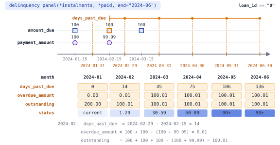
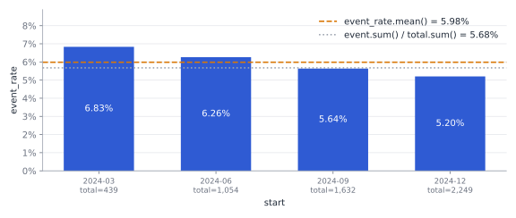
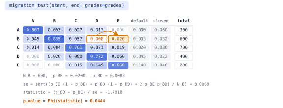

Vintage and roll-rate analysis#
Once a scorecard is in use, the loans it approves are monitored as they age. kivi.vintage covers the two standard views of a loan portfolio: vintage curves, which follow the bad rate of each origination cohort by month on book, and roll rates and transition matrices, which show how loans move between delinquency buckets from one month end to the next.
Vintage analysis follows the loans themselves, where Model monitoring and the population stability index monitor the applicants, Model validation reviews the model once a year and Regulatory capital sets the capital of its PDs. Its curves and matrices then give the PD term structures of Lifetime PD and expected credit loss, the last step of the user guide. delinquency_panel() builds the monthly loan panel from the instalment schedules and the payments of the loans, vintage_table() gives the vintage curves, default_rate_table() the one-year default rates of the grades that calibrate a PD model, and transition_matrix() and roll_rates() the movements between buckets. migration_bandwidth() and migration_test() summarize and test the migrations between rating grades, as the European Central Bank asks in the validation of PD models.
The loan panel#
Vintage curves and roll rates both work on a loan panel in long format, with one row per loan and month on book. The examples use the synthetic panel of make_loan_panel(): 5,000 instalment loans originated from January 2024 to December 2025 and observed at every month end up to January 2026.
>>> import numpy as np
>>> import pandas as pd
>>> from kivi.datasets import make_loan_panel
>>> panel = make_loan_panel(rng=0)
>>> panel.head(3)
loan_id cohort month month_on_book term amount balance status
0 1 2024-01 2024-02 1 24 18300.0 17621.56 current
1 1 2024-01 2024-03 2 24 18300.0 16936.33 current
2 1 2024-01 2024-04 3 24 18300.0 16244.25 current
>>> panel["status"].cat.categories.tolist()
['current', '1-29', '30-59', '60-89', '90+']
The status is an ordered categorical of days past due, so a comparison such as panel["status"] >= "60-89" follows the order of the buckets. Example data describes how the panel is simulated, and the next section how to build such a panel from repayment schedules.
From a repayment schedule#
A loan system records the instalments that each loan owes and the payments that it receives, rather than a status at every month end. delinquency_panel() builds the panel from them. It takes the schedule, with the loan, the due date and the amount due of each instalment, and the payments, with the loan, the date and the amount of each payment. Neither needs to be sorted. Here four loans each owe three instalments of 100, due on the 15th of January, February and March 2024:
>>> from kivi.vintage import delinquency_panel
>>> schedule = pd.DataFrame(
... {
... "loan": np.repeat(["A", "B", "C", "D"], 3),
... "due_date": pd.to_datetime(["2024-01-15", "2024-02-15", "2024-03-15"] * 4),
... "amount_due": 100.0,
... "principal": [94.0, 96.0, 98.0] * 4,
... }
... )
>>> payments = pd.DataFrame(
... {
... "loan": ["A", "A", "A", "B", "B", "C", "C", "D", "D"],
... "date": pd.to_datetime(
... ["2024-01-15", "2024-02-15", "2024-03-14", "2024-01-15", "2024-03-20",
... "2024-01-10", "2024-03-15", "2024-01-15", "2024-02-15"]
... ),
... "amount": [100.0, 100.0, 100.0, 100.0, 200.0, 200.0, 100.0, 100.0, 99.99],
... }
... )
>>> instalments = schedule["loan"], schedule["due_date"], schedule["amount_due"]
>>> paid = payments["loan"], payments["date"], payments["amount"]
>>> book = delinquency_panel(*instalments, *paid, end="2024-06")
>>> book.drop(columns=["cohort", "month_on_book"])
loan_id month days_past_due overdue_amount outstanding status
0 A 2024-01 0 0.00 200.00 current
1 A 2024-02 0 0.00 100.00 current
2 A 2024-03 0 0.00 0.00 current
3 B 2024-01 0 0.00 200.00 current
4 B 2024-02 14 100.00 200.00 1-29
5 B 2024-03 0 0.00 0.00 current
6 C 2024-01 0 0.00 100.00 current
7 C 2024-02 0 0.00 100.00 current
8 C 2024-03 0 0.00 0.00 current
9 D 2024-01 0 0.00 200.00 current
10 D 2024-02 14 0.01 100.01 1-29
11 D 2024-03 45 100.01 100.01 30-59
12 D 2024-04 75 100.01 100.01 60-89
13 D 2024-05 106 100.01 100.01 90+
14 D 2024-06 136 100.01 100.01 90+

How delinquency_panel computes the rows of loan D. Its instalments fall due on the 15th of January, February and March, and it pays 100 on 15 January and 99.99 on 15 February. At each month end, the payments made by then go to the oldest instalments first, so the February instalment stays 0.01 short and days_past_due counts from its due date. The loan keeps rolling after its last due date until end.#
Each loan has a row at the end of every month from the month of its first due date, here January, to end. The rows follow the rules that loan servicing usually applies:
Payments go to the oldest unpaid instalment first. A pays every instalment by its due date and stays current. B misses its February instalment and pays it with the March one on 20 March: it is 14 days past due at the end of February, counted from 15 February, and current again at the end of March.
A month end counts only the payments made on or before that day, so B’s payment of 20 March does not count at the end of February.
An amount paid before an instalment falls due counts towards it. C pays two instalments on 10 January, which keeps it current in February although it pays nothing that month.
A partial payment leaves the instalment unpaid. D pays 99.99 in February, so its February instalment remains unpaid by 0.01 and the loan is past due from 15 February.
A loan leaves the panel after the month end at which all its instalments are paid, also before its last due date, while a loan that is still behind after its last due date keeps rolling until
end: D is 136 days past due at the end of June.make_loan_panel()treats its loans in the same way.Payments after
endare not used, and neither are amounts beyond the total due, such as an overpayment or a payment after the loan was repaid: the panel keeps no credit balance.Instalments due on the same day add up, so a schedule row that a faulty join repeats doubles the amount due. Drop such duplicates before building the panel.
days_past_due counts the days from the due date of the oldest unpaid instalment to the month end, and is 0 while nothing is past due; an instalment is not past due on its due date. status puts the days in the buckets of the simulated panel, and overdue_amount and outstanding are the unpaid amounts of the instalments due before the month end and of all instalments. cohort is the month before the first due date, and month_on_book counts the months from it, so it is 1 in the month of the first due date, as in the simulated panel, whose first instalment falls due a month after origination. The cohorts can come from origination dates instead, as a section below shows.
Payments of a loan that is not in the schedule raise an error, and so do missing loans, dates and amounts and negative amounts; net a reversal against the payment that it reverses:
>>> delinquency_panel(*instalments, ["Z"], ["2024-01-15"], [100.0], end="2024-06")
Traceback (most recent call last):
...
ValueError: payment_loan must contain only loans of the schedule, got 'Z'
Tolerance#
A cent short should not usually make a loan delinquent. tolerance is the largest unpaid amount that still counts as paid: an instalment counts as paid once at most tolerance remains unpaid of it and the older instalments together. The amounts in the panel stay exact, and the cent left over is still owed, so the next payment goes to it first. With a tolerance of 0.01, D’s February instalment counts as paid, and its days past due count from its March instalment instead:
>>> lenient = delinquency_panel(*instalments, *paid, end="2024-06", tolerance=0.01)
>>> def days_of_d(panel):
... return panel[panel["loan_id"] == "D"].set_index("month")["days_past_due"]
>>> pd.DataFrame({"exact": days_of_d(book), "tolerance": days_of_d(lenient)})
exact tolerance
month
2024-01 0 0
2024-02 14 0
2024-03 45 16
2024-04 75 46
2024-05 106 77
2024-06 136 107
A loan leaves the panel once all its instalments count as paid, that is, once at most tolerance of it is unpaid in total. A tolerance as large as the total due therefore lets even a loan that pays nothing leave in its first month. Without any payments and with a tolerance of 300, each of the four loans has a single row:
>>> len(delinquency_panel(*instalments, [], [], [], end="2024-06", tolerance=300.0))
4
Keep tolerance to the size of a rounding difference.
Principal and balance#
With the principal part of each instalment in principal, the panel gets a balance column, the principal that remains unpaid, like the balance of the simulated panel. A payment pays the interest of an instalment, its amount due less its principal, before its principal, so D’s missing cent is principal. At the end of February:
>>> with_balance = delinquency_panel(
... *instalments, *paid, end="2024-06", principal=schedule["principal"]
... )
>>> february = with_balance["month"] == "2024-02"
>>> with_balance.loc[february, ["loan_id", "outstanding", "balance"]]
loan_id outstanding balance
1 A 100.00 98.00
4 B 200.00 194.00
7 C 100.00 98.00
10 D 100.01 98.01
The panel has no weights: it has one row per loan and month, and the functions that count the rows take the weights, such as the amount lent in vintage_table() or the balance in roll_rates().
Cohorts and origination dates#
Without origination dates, the cohort of a loan is the month before its first due date. That is the origination month when the first instalment falls due a month after origination, but not after a grace period. E is originated on 20 January 2024 and pays from February, while F is originated on 5 January and pays from April. Both pay every instalment on its due date, so their schedule serves as their payments too. By the first due date, F falls into the March cohort:
>>> grace = (
... ["E", "E", "F", "F"],
... ["2024-02-20", "2024-03-20", "2024-04-05", "2024-05-05"],
... [50.0] * 4,
... )
>>> by_due_date = delinquency_panel(*grace, *grace, end="2024-05")
>>> by_due_date[["loan_id", "cohort", "month", "month_on_book"]]
loan_id cohort month month_on_book
0 E 2024-01 2024-02 1
1 E 2024-01 2024-03 2
2 F 2024-03 2024-04 1
3 F 2024-03 2024-05 2
origination gives the origination date of each loan, as a Series indexed by loan or as a dict. The cohort is then the origination month and month_on_book counts from it, so F joins E’s cohort, with its first row at month on book 3:
>>> originated = {"E": "2024-01-20", "F": "2024-01-05"}
>>> by_origination = delinquency_panel(*grace, *grace, end="2024-05", origination=originated)
>>> by_origination[["loan_id", "cohort", "month", "month_on_book"]]
loan_id cohort month month_on_book
0 E 2024-01 2024-02 1
1 E 2024-01 2024-03 2
2 F 2024-01 2024-04 3
3 F 2024-01 2024-05 4
The rows are the same either way; only cohort and month_on_book change. vintage_table() observes a cohort from the smallest month on book of its rows, so a cohort whose loans all have a grace period starts at a later month on book, with NaN entries before it. origination must give a date for every loan of the schedule, and a first due date before origination raises an error.
From the panel to a vintage table#
The panel has the columns of the simulated panel that the rest of this guide uses, with the same names: loan_id, cohort, month, month_on_book, status and, with principal, balance. The code of the following sections therefore runs on it unchanged, the balance roll rates included. Its vintage table, with a bad definition on status:
>>> from kivi.vintage import vintage_table
>>> vintage_table(
... book["loan_id"], book["cohort"], book["month_on_book"], book["status"] >= "30-59"
... )
month_on_book 1 2 3 4 5 6
cohort
2023-12 0.0 0.0 0.25 0.25 0.25 0.25
D reaches 30-59 at month on book 3, when it is 45 days past due. A, B and C leave the panel after month on book 3, but they stay in the cohort, so the rate remains one loan in four.
The same panel also tells how each loan has been repaid so far. With a column that names the borrower of each loan, panel_features() turns it into features of a scorecard for the borrower’s next application, such as the bad months and the longest run of bad months in the year before the month of that application, as the section Repayment behaviour of Time-window features shows.
Days past due at month ends#
The buckets count days, while month ends are 28 to 31 days apart, so a loan does not always move one bucket a month. An instalment due on 31 January is not yet past due at the end of January, 29 days past due at the end of February and 60 days at the end of March, so the loan skips 30-59:
>>> skipped = delinquency_panel(["G"], ["2024-01-31"], [100.0], [], [], [], end="2024-04")
>>> skipped[["month", "days_past_due", "status"]]
month days_past_due status
0 2024-01 0 current
1 2024-02 29 1-29
2 2024-03 60 60-89
3 2024-04 90 90+
Roll rates of such a panel then show loans that move two buckets in a month, which never happens in the simulated panel, because it counts months rather than days. The jumps come from due dates near the start or the end of a month.
Vintage curves#
A loan is ever bad by month on book \(k\) if it was bad at any month on book up to \(k\). A vintage table holds, for each cohort and month on book, the share of the cohort’s loans that are ever bad by then. vintage_table() takes the loan, the cohort, the month on book and whether the loan is bad on each row, so the bad definition is a condition on the status. Here a loan is bad once it is 90 days past due:
>>> from kivi.vintage import vintage_table
>>> ever_90 = vintage_table(
... panel["loan_id"], panel["cohort"], panel["month_on_book"], panel["status"] == "90+"
... )
>>> ever_90[[6, 12, 18, 24]].iloc[::3].round(3)
month_on_book 6 12 18 24
cohort
2024-01 0.000 0.068 0.094 0.094
2024-04 0.020 0.034 0.084 NaN
2024-07 0.005 0.051 0.081 NaN
2024-10 0.010 0.025 NaN NaN
2025-01 0.005 0.034 NaN NaN
2025-04 0.010 NaN NaN NaN
2025-07 0.005 NaN NaN NaN
2025-10 NaN NaN NaN NaN

Vintage curves of the cohorts in the table: each curve stops at the cohort’s latest month on book.#
Each row follows one cohort and never decreases from left to right, because a loan that was bad stays counted as bad even if it cures later. The entries a cohort has not reached are NaN, not 0: the 2025-04 cohort is observed up to month on book 9, so its bad rate at month 12 is not known yet. Reading down a column compares the cohorts at the same age, which separates the quality of new lending from the seasoning of the portfolio. The latest value of each cohort mixes the two, because older cohorts have had more time to go bad.
Every cohort here has about 200 loans, so one bad loan moves its rate by half a percentage point. Compare small differences only after averaging several cohorts.
Bad definitions and amounts#
An earlier bad definition gives an earlier signal. On the ordered status, >= "60-89" counts the loans that reached 60 days past due or worse:
>>> ever_60 = vintage_table(
... panel["loan_id"], panel["cohort"], panel["month_on_book"], panel["status"] >= "60-89"
... )
>>> pd.DataFrame({"ever_60": ever_60[6], "ever_90": ever_90[6]}).head(4).round(3)
ever_60 ever_90
cohort
2024-01 0.021 0.000
2024-02 0.029 0.020
2024-03 0.025 0.015
2024-04 0.030 0.020
To weight each loan by the amount lent, pass weights. The table then reports the share of the cohort’s amount lent that went to loans that turned bad:
>>> by_amount = vintage_table(
... panel["loan_id"],
... panel["cohort"],
... panel["month_on_book"],
... panel["status"] == "90+",
... weights=panel["amount"],
... )
>>> by_amount[[6, 12, 18, 24]].iloc[::3].round(3)
month_on_book 6 12 18 24
cohort
2024-01 0.000 0.068 0.094 0.094
2024-04 0.026 0.035 0.091 NaN
2024-07 0.009 0.058 0.080 NaN
2024-10 0.010 0.018 NaN NaN
2025-01 0.003 0.030 NaN NaN
2025-04 0.018 NaN NaN NaN
2025-07 0.007 NaN NaN NaN
2025-10 NaN NaN NaN NaN
The weight must be the same on every row of a loan, so pass the amount lent rather than the outstanding balance.
One-year default rates#
A vintage curve follows the loans from origination. The PD of an IRB model refers instead to the year after a given date, whatever the age of the loans, so its calibration and validation count defaults by cohorts of start dates. The cohort of a start date holds the obligors that are not in default at that date, grouped by their grade at that date, and its one-year default rate is the share of them that default at least once in the following year (EBA/GL/2017/16, paragraphs 73 to 77; the European Central Bank’s validation reporting, section 2.3). default_rate_table() forms these cohorts from a monthly panel. The synthetic panel has no rating grades, so the example takes the delinquency bucket at the start month as the pool of a retail loan and a status of 90+ as a default:
>>> from kivi.vintage import default_rate_table
>>> rates = default_rate_table(
... panel["loan_id"], panel["month"], panel["status"], panel["status"] == "90+"
... )
>>> rates.round(4)
total event exited event_rate
start grade
2024-03 current 433 27 75 0.0624
1-29 5 3 0 0.6000
30-59 1 0 0 0.0000
2024-06 current 1009 46 194 0.0456
1-29 31 7 5 0.2258
30-59 13 12 0 0.9231
60-89 1 1 0 1.0000
2024-09 current 1557 65 281 0.0417
1-29 49 9 9 0.1837
30-59 16 9 3 0.5625
60-89 10 9 1 0.9000
2024-12 current 2146 73 413 0.0340
1-29 65 17 12 0.2615
30-59 23 16 0 0.6957
60-89 15 11 0 0.7333
The start months default to the quarter ends whose twelve following months lie in the panel, which ends in January 2026, so the last start is December 2024. The EBA guidelines ask for the one-year default rates at least quarterly (paragraph 78). total counts the loans of the cohort and event those in default in at least one month of the year after the start, so a loan that defaults, cures and defaults again counts once. Loans already in default at the start belong to no cohort, which is why the table has no 90+ rows. The grade is the one at the start month: a loan of the current pool that falls behind later still counts in the current pool. Pass starts to choose the months, such as one month a year for non-overlapping windows or the start of the observation period of a validation report, and horizon for windows of another length.
Averages over the start months#
The observed average default rate is the arithmetic mean of the one-year default rates, for each grade and for the whole calibration segment (paragraphs 79 and 81). For the grades, average the rates of each grade; for the segment, add up the counts of each start month first:
>>> rates["event_rate"].groupby(level="grade", observed=True).mean().round(4)
grade
current 0.0459
1-29 0.3178
30-59 0.5453
60-89 0.8778
Name: event_rate, dtype: float64
>>> portfolio = rates.groupby(level="start")[["total", "event"]].sum()
>>> segment_rate = portfolio["event"] / portfolio["total"]
>>> segment_rate.round(4)
start
2024-03 0.0683
2024-06 0.0626
2024-09 0.0564
2024-12 0.0520
Freq: M, dtype: float64
>>> print(f"{segment_rate.mean():.4f}")
0.0598

The one-year default rates of the four start months fall as the young book grows. Their mean, the observed average default rate, counts every start month once; pooling the counts gives the large cohorts of late 2024 more weight and a lower rate.#
Every start month counts once, however many loans its cohort holds, and adding the counts of all the start months would give another number, the pooled rate. For retail exposures the guidelines also allow a weighted average that gives recent years more weight, numpy.average(segment_rate, weights=...). Quarterly windows overlap, so a year in the middle of the history enters four averages and a year at either end fewer; paragraph 80 asks for an analysis of that and of the other biases of the chosen start months.
The long-run average default rate is this average over a historical observation period that reflects the likely range of variability of the default rates: at least five years, with a representative mix of good and bad years (paragraphs 82 to 84; Basel CRE36.79). Two years of a growing book, as here, are not enough. Where bad years are missing, the average is adjusted upwards; where they are overrepresented, it may be adjusted downwards, but an adjusted rate below the larger of two averages, over the last five years and over all years, needs a specific justification (paragraphs 85 and 86). With quarterly start months, the last five years are the last 20 rates. These adjustments are the lender’s judgement and are not computed here. The long-run average is the central tendency to which Calibration brings the PDs, and vasicek_fit() in Regulatory capital estimates the asset correlation from the same series; pass it rates of non-overlapping windows, one start month a year, because overlapping windows make neighbouring rates move together.
Loans that leave#
exited counts the loans of a cohort that left the panel during the year without a default, here mostly loans repaid early. They stay in total: the guidelines keep in the denominator the obligors whose loans were repaid, sold or written off during the year, and those that migrated to another grade or model, so that the defaults of all of them count (paragraph 76). A survival curve, such as the Kaplan-Meier curve of survival_table(), treats such loans as censored instead and gives a higher rate when many leave; in the current pool of December 2024, where 413 of 2,146 loans leave, the one-year default rate is 3.40% against about 3.9% for one minus the Kaplan-Meier survival. Paragraphs 76 and 80 ask the lender to analyse whether the loans that leave bias the default rate, and exited is where that analysis starts:
>>> (rates["exited"] / rates["total"]).xs("current", level="grade").round(3)
start
2024-03 0.173
2024-06 0.192
2024-09 0.180
2024-12 0.192
Freq: M, dtype: float64
A loan without a row in some months of the year counts as not in default in them. The panel should therefore keep the rows of loans that migrate to another model or approach, as the ECB’s reporting counts their defaults as well.
Defaults and grades#
defaulted flags a month in which the loan is in default. Month-end statuses miss a default that starts and ends within one month, so flag a month in which the loan was in default at any time, and include the probation period of the definition of default, during which a cured loan still counts as in default. Leave out technical defaults, which the ECB’s reporting excludes, and defaults recorded in error (paragraph 71). The default definition applies to the obligor for most portfolios and may apply to the facility for retail ones; pass the identifier at that level as loan.
A missing grade forms a row of its own, listed after the grades. The guidelines ask for the default rate of the obligors without a rating at the start as well (paragraph 75), while the ECB’s reporting leaves them out of the number of customers. Categorical grades keep the order of their categories, as the buckets above do, and other grades are sorted; pass observed=True to groupby to average only the grades of the table.
With weights, the counts are sums of the weights of the rows at the start month, and integer weights give the same table as repeating loans. Use them for sampling weights only: the PDs of a rating grade rest on default rates that count obligors, and weighting by exposure is not allowed for them (Basel CRE36.78). probability adds the mean PD of each cohort at the start month, mean_probability, which the Model validation tests compare with the default rate.
Roll rates#
A roll rate is the share of the loans in a delinquency bucket at one month end that are in the next worse bucket at the next month end. To pair each row with the row of the same loan one month on book later, merge the panel with itself shifted by one month. The last row of a loan has no partner, because the loan was repaid or the panel ends, and drops out. Unlike shifting the rows within each loan, the merge pairs the right months however the rows are sorted and wherever a month is missing:
>>> from kivi.vintage import roll_rates, transition_matrix
>>> later = panel[["loan_id", "month_on_book", "status"]].assign(
... month_on_book=panel["month_on_book"] - 1
... )
>>> pairs = panel.merge(later, on=["loan_id", "month_on_book"], suffixes=("", "_next"))
>>> before, after = pairs["status"], pairs["status_next"]
>>> roll_rates(before, after).round(3)
before
current 0.023
1-29 0.295
30-59 0.553
60-89 0.712
Name: roll_rate, dtype: float64
Both columns are ordered categoricals, so roll_rates() takes the order of the states, from the best to the worst, from their categories. For plain labels, pass states: sorted, "current" would come after "90+". Each month about 2.3% of the current loans miss an instalment, and the share that rolls on rises with the days past due: seven in ten of the loans at 60 to 89 days are 90 days past due a month later.
A loan falls at most one bucket further behind per month, so the only way from current to 90+ in four months is to roll every month. If the movements follow a Markov chain, the product of the roll rates is the share of current loans that are 90+ four months later:
>>> print(f"{roll_rates(before, after).prod():.5f}")
0.00264
Balance roll rates weight each loan by its balance at the first month end, as loss forecasts do:
>>> roll_rates(before, after, weights=pairs["balance"]).round(3)
before
current 0.023
1-29 0.292
30-59 0.555
60-89 0.732
Name: roll_rate, dtype: float64
Transition matrices#
transition_matrix() shows all the movements, not only the roll to the next bucket. Row i, column j counts the loans that moved from state i to state j:
>>> transition_matrix(before, after)
after current 1-29 30-59 60-89 90+
before
current 49436 1150 0 0 0
1-29 716 277 415 0 0
30-59 126 0 91 268 0
60-89 31 0 0 52 205
90+ 0 0 0 0 1528
With normalize=True, each row holds the shares of its loans and sums to 1:
>>> monthly = transition_matrix(before, after, normalize=True)
>>> monthly.round(3)
after current 1-29 30-59 60-89 90+
before
current 0.977 0.023 0.000 0.000 0.000
1-29 0.509 0.197 0.295 0.000 0.000
30-59 0.260 0.000 0.188 0.553 0.000
60-89 0.108 0.000 0.000 0.181 0.712
90+ 0.000 0.000 0.000 0.000 1.000

The monthly transition matrix with normalize=True. The shares just right of the diagonal, outlined, are the roll rates that roll_rates returns.#
The diagonal holds the loans that stayed in their bucket, the current column the cures and the entries just right of the diagonal the roll rates. A loan that reaches 90+ stays there in this data, so the last row is all 90+.
Migration between two dates#
The same function compares any two observations of the same entities, such as the rating grades of obligors at two annual reviews or the delinquency buckets of a portfolio at two month ends. Here are the loans on book at the end of both June and December 2025:
>>> june = panel[panel["month"] == "2025-06"].set_index("loan_id")["status"]
>>> december = panel[panel["month"] == "2025-12"].set_index("loan_id")["status"]
>>> both = june.index.intersection(december.index)
>>> six_months = transition_matrix(june[both], december[both], normalize=True)
>>> six_months.round(3)
after current 1-29 30-59 60-89 90+
before
current 0.953 0.019 0.011 0.006 0.011
1-29 0.775 0.034 0.000 0.000 0.191
30-59 0.211 0.000 0.000 0.000 0.789
60-89 0.150 0.000 0.000 0.000 0.850
90+ 0.000 0.000 0.000 0.000 1.000
Only the loans on book at both month ends are compared. The 226 loans repaid in between, almost all of them current in June, drop out, so the current row describes the loans that stayed on book. Missing values raise an error instead of being counted, so first decide what to do with the entities observed only once: drop them, as here, or give them a state of their own, such as "closed", to keep them in the shares.
If the monthly movements followed a time-homogeneous Markov chain, the sixth power of the monthly matrix would give the six-month matrix. Comparing the shares that end in 90+ shows how far that holds:
>>> projected = np.linalg.matrix_power(monthly.to_numpy(), 6)
>>> pd.DataFrame({"projected": projected[:, -1], "observed": six_months["90+"]}).round(3)
projected observed
before
current 0.011 0.011
1-29 0.218 0.191
30-59 0.592 0.789
60-89 0.869 0.850
90+ 1.000 1.000
The projection is of the right size but not exact: loans differ in risk, and the chance of missing an instalment depends on the month on book, so the movements are not a time-homogeneous Markov chain. Few loans are 30 to 89 days past due in June, so those rows are also uncertain.
Migration tests#
A rating system is stable when most customers keep their grade from one year to the next and those who move do not move far. The European Central Bank asks for two summaries of the migration matrix of a PD model. The data are the grade of each customer at the beginning of the observation period and the status at its end: a grade, or a label such as "default" or "closed" for the customers who left the grades. Here 2,200 customers in five grades, from A, the best, to E, migrate for a year by a simulated migration matrix:
>>> rng = np.random.default_rng(0)
>>> grades = ["A", "B", "C", "D", "E"]
>>> statuses = grades + ["default", "closed"]
>>> yearly = np.array([
... [0.86, 0.07, 0.02, 0.01, 0.00, 0.00, 0.04],
... [0.06, 0.80, 0.06, 0.01, 0.03, 0.01, 0.03],
... [0.01, 0.07, 0.78, 0.07, 0.02, 0.02, 0.03],
... [0.00, 0.01, 0.08, 0.76, 0.08, 0.04, 0.03],
... [0.00, 0.00, 0.02, 0.09, 0.73, 0.13, 0.03],
... ])
>>> counts = [300, 600, 700, 400, 200]
>>> start = np.repeat(grades, counts)
>>> end = np.concatenate([
... rng.choice(statuses, size=count, p=row) for count, row in zip(counts, yearly)
... ])
>>> transition_matrix(start, end, states=statuses, normalize=True).loc[grades].round(3)
after A B C D E default closed
before
A 0.807 0.093 0.027 0.013 0.000 0.000 0.060
B 0.045 0.835 0.057 0.008 0.020 0.003 0.032
C 0.014 0.084 0.761 0.071 0.019 0.020 0.030
D 0.000 0.020 0.080 0.772 0.060 0.045 0.022
E 0.000 0.000 0.015 0.145 0.660 0.140 0.040
The matrix of the simulation sends more customers from grade B to grade E than to grade D, a jump that a stable rating system should not make.
Migration bandwidth#
Number the grades from 1 to \(K\), and let \(N_{ij}\) customers move from grade \(i\) to grade \(j\). The upper matrix weighted bandwidth (MWB) adds up how far the customers moved to worse grades, above the diagonal, relative to the furthest move from each customer’s grade in either direction:
and the lower MWB does the same for the moves to better grades, below the diagonal. Both lie between 0 and 1, and smaller values mean shorter migrations. migration_bandwidth() takes the grades from the best to the worst in grades; the customers who defaulted or left change neither bandwidth:
>>> from kivi.vintage import migration_bandwidth, migration_test
>>> migration_bandwidth(start, end, grades=grades).round(4)
statistic
upper 0.4618
lower 0.4047
dtype: float64
The furthest move from the middle grade C is two grades and that from grade A four, so a move of one grade weighs half the furthest move from C but a quarter of it from A. The furthest move counts in either direction, so an upgrade of one grade from grade B, as far as B can rise, is measured against the three grades that B could fall.
Monotonicity of the migration matrix#
In each row of the matrix, the shares should fall away from the diagonal. migration_test() compares each off-diagonal share \(p_{ij}\) with the share \(p_{in}\) of its neighbour towards the diagonal, \(n = j - 1\) above it and \(n = j + 1\) below it. With \(N_i\) customers in grade \(i\) at the beginning, those who defaulted or left included,
and the p-value is \(\Phi(z_{ij})\). A small p-value means that the cell holds more customers than its neighbour. Here only the jump from B to E stands out:
>>> migration = migration_test(start, end, grades=grades)
>>> migration.loc["B"].round(4)
total share statistic p_value
after
A 600 0.0450 38.2532 1.0000
C 600 0.0567 35.6584 1.0000
D 600 0.0083 4.7295 1.0000
E 600 0.0200 -1.7018 0.0444
>>> migration[migration["p_value"] < 0.05].round(4)
total share statistic p_value
before after
B E 600 0.02 -1.7018 0.0444

How migration_test computes the statistic of the cell from B to E. Grade B sends 2.0% of its 600 customers to grade E but only 0.8% to grade D, its neighbour towards the diagonal, so the statistic is negative and the p-value small. The customers who defaulted or closed count only in the total N_B.#
total counts every customer of the grade at the beginning, so the shares of a row add up to less than 1 when customers defaulted or left. The cells next to the diagonal are compared with the diagonal, so their statistics are large. A statistic is NaN where the test is not defined, as for the cell from E to A, whose share and whose neighbour’s share are both 0:
>>> migration.loc[("E", "A")]
total 200.0
share 0.0
statistic NaN
p_value NaN
Name: (E, A), dtype: float64
The table has a row for each of the 20 off-diagonal cells, so some p-values fall below 5% by chance alone; read a small p-value together with the size of the cell. With weights, the counts are sums of weights, and integer weights give the same result as repeating rows. The tests count the weights as customers, so weights such as exposures do not give standard normal statistics.